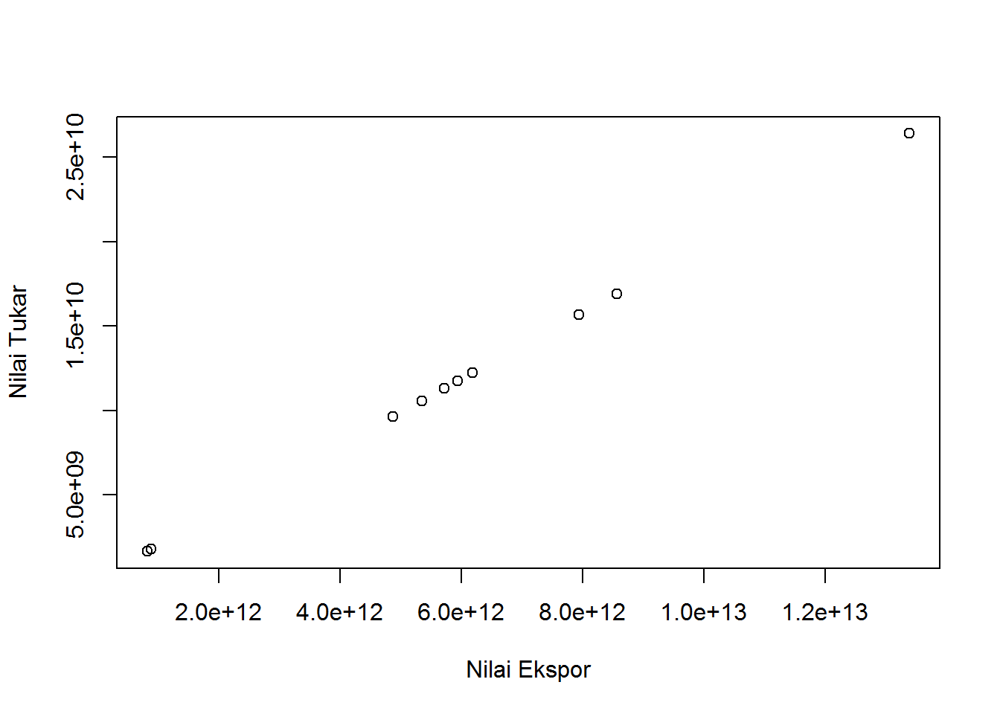
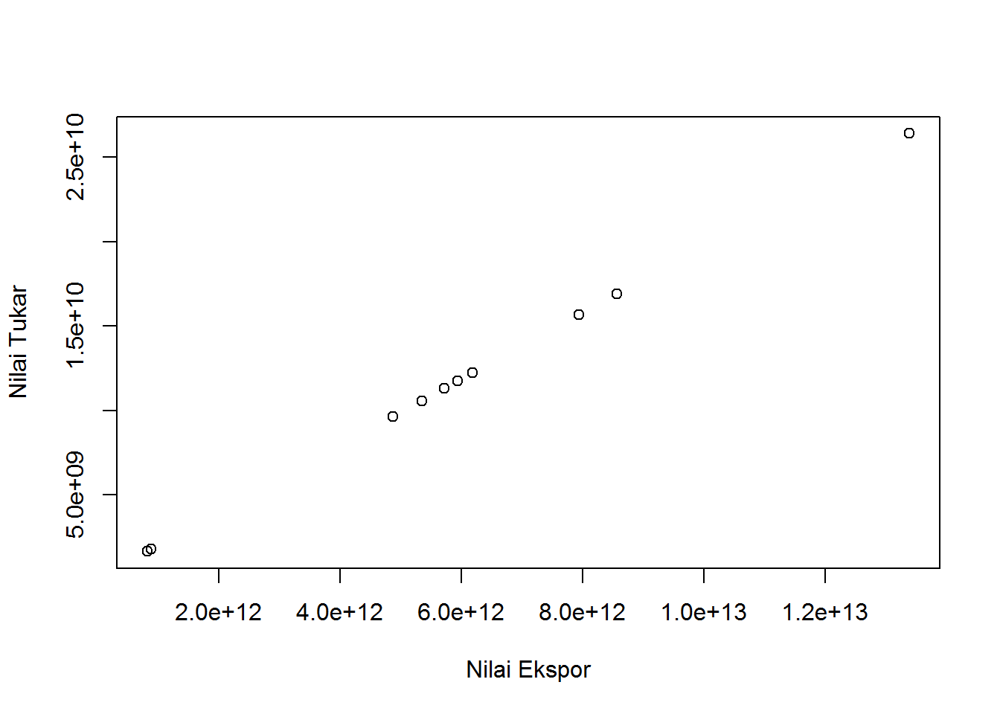
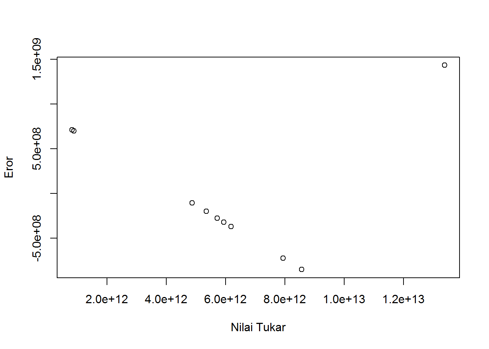

library(readxl)Warning: package 'readxl' was built under R version 4.2.2dat<-read_excel('latihan.xlsx')
reg1<-lm(Y~X,data=dat)
plot(dat$Y,dat$X,xlab="Nilai Ekspor",ylab="Nilai Tukar")
Metode Penelitian Politeknik APP Jakarta

Di era globalisasi, perdagangan internasional merupakan salah satu instrumen untuk mendorong pertumbuhan ekonomi. Secara tradisional, perdagangan internasional terjadi karena kelangkaan sumber daya di suatu negara. Kelangkaan sumber daya di suatu negara dapat teratasi karena memperoleh sumber daya langka tersebut dari negara lain melalui jalur perdagangan. Perdagangan internasional erat kaitannya dengan kegiatan ekspor-impor. Ekspor adalah kegiatan mengeluarkan barang dari daerah pabean, sedangkan impor adalah kegiatan memasukkan barang ke dalam daerah pabean. Kegiatan perdagangan internasional yang diwujudkan dalam kegiatan ekspor dan impor tersebut akan berpengaruh kepada perekonomian nasional suatu negara. Apabila suatu negara mengekspor lebih banyak dari impornya, maka negara tersebut memiliki surplus perdagangan. Sebaliknya, apabila suatu negara mengimpor lebih banyak dari ekspornya, negara tersebut mengalami defisit neraca perdagangan.
Berdasarkan penjelasan di atas dapat dikatakan bahwa perdagangan internasional berperan penting karena adanya saling ketergantungan antar negara untuk memenuhi kebutuhannya masing-masing. Begitupun dengan Indonesia yang turut berperan melakukan perdagangan internasional. Dengan kekayaan alamnya yang melimpah, Indonesia memiliki banyak potensi untuk melakukan ekspor. Salah satu komoditi unggulan Indonesia adalah kopi. Indonesia diberkati dengan letak geografisnya yang sangat cocok difungsikan sebagai lahan perkebunan kopi. Letak Indonesia sangat ideal bagi iklim mikro untuk pertumbuhan dan produksi kopi. Indonesia tercatat sebagai pengekspor kopi ke-4 di dunia dengan nilai ekspor mencapai sekitar 639 ribu ton per tahunnya. Dilansir dari Badan Pusat Statistik (BPS) Indonesia, total ekspor kopi Indonesia ke Mesir pada tahun 2021 mencapai 890 juta US Dollar, menjadikan Mesir sebagai negara tujuan ekspor kopi terbesar kedua setelah Amerika Serikat. Besarnya nilai ekspor kopi ke Mesir dapat menjadi salah satu faktor penyebab perubahan nilai tukar rupiah sehingga diperlukan adanya analisis lebih lanjut untuk mengetahui seberapa signifikan ekspor kopi ke mesir terhadap nilai tukar rupiah.
Penelitian ini mengambil data dengan subjek nilai ekspor kopi dari negara Indonesia ke negara Mesir. Data nilai ekspor diperoleh dari Badan Pusat Statistik Indonesia dengan fokus waktu selama 10 tahun terakhir yaitu mulai dari tahun 2012 hingga 2021. Data kemudian dibandingkan dengan data nilai tukar rupiah.
Bagaimana ekspor kopi ke negara Mesir dapat mempengaruhi nilai tukar rupiah?
Tujuan dan manfaat penelitian ini adalah untuk mengetahui pengaruh ekspor kopi ke negara Mesir terhadap nilai tukar rupiah sebagai gambaran dan acuan untuk menetapkan kebijakan terhadap ekspor kopi ke negara Mesir.
Dalam ekonomi internasional, penyebab terjadinya perdagangan yaitu karena adanya perbedaan potensi sumber daya yang dimiliki masing-masing negara. Berdasarkan teori perdagangan internasional, tujuan utama suatu negara melakukan perdagangan adalah untuk memperoleh keuntungan (Salvatore, 1997).
Kegiatan ekspor mempunyai hubungan positif dengan pertumbuhan ekonomi suatu negara, semakin banyak kegiatan ekspor di negara tersebut maka pertumbuhan ekonomi juga akan naik dan hal ini akan berdampak pada iklim investasi yang semakin tumbuh beriringan dengan kegiatan ekspor tersebut (Krueger, 1988:40).
Ekspor adalah kegiatan perdagangan internasional yang memberikan rangsangan guna menumbuhkan permintaan dalam negeri yang menyebabkan tumbuhnya industri-industri pabrik besar, bersama dengan struktur politik yang stabil dan lembaga sosial yang fleksibel. Dengan kata lain, ekspor mencerminkan aktivitas perdagangan internasional, sehingga suatu negara yang sedang berkembang kemungkinan untuk mencapai kemajuan perekonomian setara dengan negara-negara yang lebih maju (Todaro dkk, 2004).
Berdasarkan data statistik BPS, ekspor kopi Indonesia pada periode Januari-November 2021 ke Mesir mencapai USD 79,20 juta (senilai Rp. 1,14 triliun) atau naik sebesar 57,79 persen dibandingkan periode yang sama tahun 2020 sebesar USD 55,02 juta dengan volume tonase mencapai 43,790 matrik ton dengan kenaikan 47,75 persen dibandingkan periode yang sama tahun 2020 sebesar 32,537 metrik ton.
| Tahun | Nilai Ekspor (Egyptian Pound) | Nilai Ekspor (IDR) |
|---|---|---|
| 2012 | 11.304.111.489.00 | 5.726.994.645.825.90 |
| 2013 | 10.556.821.247.25 | 5.348.395.477.059.32 |
| 2014 | 9.614.198.637.00 | 4.870.835.197.581.42 |
| 2015 | 11.733.474.708.00 | 5.944.522.653.995.35 |
| 2016 | 12.218.274.096.00 | 6.190.136.252.381.87 |
| 2017 | 15.668.196.283.50 | 7.937.968.084.680.64 |
| 2018 | 16.901.858.781.00 | 8.562.977.712.798.15 |
| 2019 | 1.752.174.673.50 | 887.703.114.344.81 |
| 2020 | 1.632.903.815.25 | 827.276.997.063.01 |
| 2021 | 26.415.514.865.60 | 13.386.131.924.252.88 |
library(readxl)Warning: package 'readxl' was built under R version 4.2.2dat<-read_excel('latihan.xlsx')
reg1<-lm(Y~X,data=dat)
plot(dat$Y,dat$X,xlab="Nilai Ekspor",ylab="Nilai Tukar")
library(readxl)
dat<-read_excel('latihan.xlsx')
reg1<-lm(Y~X,data=dat)
dat$u<-resid(reg1)
plot(dat$Y,dat$u,xlab="Nilai Tukar",ylab="Eror")
Teknik analisis yang digunakan dalam penelitian ini adalah teknik kuantitatif dengan penjabaran deskriptif. Teknik analisis kuantitatif merupakan analisis yang dilakukan dengan perhitungan angka-angka dengan faktor yang mempengaruhi indeks nilai tukar rupiah terhadap nilai ekspor kopi ke Mesir. Metode yang dipilih adalah regresi univariat atau Ordinary Least Square (OLS) dengan 1 variabel independen. Penelitian ini bermaksud untuk mencari hubungan antara nilai tukar dan nilai ekspor. Spesifikasi yang dilakukan adalah
\[ y_{t}=\beta_0 + \beta_1 x_t+\mu_t \] di mana \(y_t\) adalah nilai tukar Egyptian Pound (Mesir) terhadap mata uang negara lain, ??0 adalah koefisien konstanta; ??1 adalah parameter; \(x_t\) adalah nilai ekspor; ??i adalah error term.
| Visual | Coefficient | Std.Error | t Value | Prob |
|---|---|---|---|---|
| Intercept | -8.801e+08 | 4.819e+08 | -1.826 | 0.105 |
| X | 5.067e+02 | 3.539e-02 | 14316.566 | <2e-16 *** |
| R-Squared | 1 |
|---|---|
| Adjusted R-Squared | 1 |
| F-Statistic | 2.05e+08 |
| Prob (F-Statistic) | < 2.2e-16 |
Ekspor kopi berpengaruh terhadap nilai tukar. Ditunjukkan dengan dilihat dari probabilitas X (Nilai Ekspor) yang signifikan dimana nilai ekspor sering menjadi faktor yang dapat mendorong naik dan turunnya kurs mata uang suatu negara. Nilai Koefisien ekspor sebesar 5.067e+02 yang berarti kenaikan perubahan nilai ekspor berpengaruh terhadap nilai kurs rupiah terhadap Egyptian Pound. Dengan hasil ini maka dapat disimpulkan bahwa ekspor kopi ke Mesir berpengaruh positif terhadap nilai tukar rupiah.
Hasil regresinya adalah
library(readxl)
dat<-read_excel("latihan.xlsx")
reg<-lm(Y~X,data=dat)
summary(reg)
Call:
lm(formula = Y ~ X, data = dat)
Residuals:
Min 1Q Median 3Q Max
-849972633 -358162678 -238750587 499538463 1433046708
Coefficients:
Estimate Std. Error t value Pr(>|t|)
(Intercept) -8.801e+08 4.819e+08 -1.826 0.105
X 5.067e+02 3.539e-02 14316.566 <2e-16 ***
---
Signif. codes: 0 '***' 0.001 '**' 0.01 '*' 0.05 '.' 0.1 ' ' 1
Residual standard error: 763800000 on 8 degrees of freedom
Multiple R-squared: 1, Adjusted R-squared: 1
F-statistic: 2.05e+08 on 1 and 8 DF, p-value: < 2.2e-16Berdasarkan data hasil analisis kuantitatif yang telah dilakukan, setelah diamati ekspor kopi ke negara Mesir berpengaruh positif terhadap nilai tukar rupiah dan Kopi merupakan komoditas unggul yang memiliki volume ekspor yang besar di Indonesia.
Badan Pusat Statistik. (n.d.). Retrieved January 18, 2023, from https://www.bps.go.id/statictable/2014/09/08/1014/ekspor-kopi-menurut-negara-tujuan-utama-2000-2021.html
Krueger, R. A. (1988). Focus groups: A practical guide for applied research (p. 197). Sage Publications, Inc.
Salvatore, D. (1996). Ekonomi internasional. Jilid 1. Edisi 5 / Dominick Salvatore; alih bahasa oleh Haris Munandar. Penerbit Erlangga.
Todaro, M. P. (2000). Pembangunan ekonomi Edisi ke 5 Jilid 2. bumi aksara.